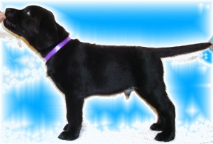

Мальчик Nikols Heavenly Blessing (голубая ленточка) - НАШЕЛ СВОИХ ХОЗЯЕВ
Мальчик Nikols Heavenly Blessing (голубая ленточка) - НАШЕЛ СВОИХ ХОЗЯЕВ
Мальчик Norton Heavenly Blessing (фиолетовая ленточка) - НАШЕЛ СВОИХ ХОЗЯЕВ

Мальчик Norton Heavenly Blessing (фиолетовая ленточка) - НАШЕЛ СВОИХ ХОЗЯЕВ
Девочка Nikoletta Heavenly Blessing (розовая ленточка) - НАШЛА СВОИХ ХОЗЯЕВ
Мальчик Norman Heavenly Blessing (зеленая ленточка) - НАШЕЛ СВОИХ ХОЗЯЕВ
Мальчик Norman Heavenly Blessing (зеленая ленточка) - НАШЕЛ СВОИХ ХОЗЯЕВ
Мальчик Nataniel Loki Heavenly Blessing (салатовая ленточка) - НАШЕЛ СВОИХ ХОЗЯЕВ
ЧЕРНЫЕ ЩЕНКИ ЛАБРАДОРА РЕТРИВЕРА
Помет "N"
17 июня 2012 г. родились щенки лабрадора ретривера черного окраса от звездной пары REAL PERSON PATRIOT и BEATRIS BRIZGY CHERNOGO MORYA - четыре черных мальчика и одна черная девочка!
ВСЕ ЩЕНКИ ПОМЕТА НАШЛИ СВОИХ ХОЗЯЕВ.
Отец щенков REAL PERSON PATRIOT - сын одного из лучших в мире производителей, финского лабрадора MALLORN'S ROMEO и Мультичемпиона GRUMBLING CINNAMON (Junior Russian Champion,CH RUS, CH BLR, СH BULG, CH MKD, СН MOLDOVA, CH UKR, CH LIT, CH EST, CLUB WINNER, CHAMPION OF THE NATIONAL CLUB, CLUB SPECIALITY 2005, GRAND CHAMPION, ЧЕМПИОН БАЛКАНСКИХ СТРАН, Кандидат в Интерчемпионы, 2хЧемпион РКФ, Чемпион РФЛС, Чемпион ОАНКОО, 2хЧемпион РФСС, Международный рабочий сертификат).
Мать щенков BEATRIS BRIZGY CHERNOGO MORYA несет крови таких известных питомников как MALLORN`S, STENVEYZ, STRONGLINE`S. В ее родословной знаменитые лабрадоры EVELLAN`S HOLSTEN, STENVEYZ DONT STOP TO DANCE, STENVEYZ DIVER SEASHELL, ЛАРСЕН ГОЛДЕН МУН, MALLORN`S CHOCOLATE CZAR, GOODQUITE`S NARY AFRAID.

Заводчик: Зинкевич Екатерина, г. Киев, (067) 502-92-17
РОДОСЛОВНАЯ ЩЕНКОВ/PEDIGREE PUPPIES
|
Юный чемпион Молдовы, Юный чемпион России, Юный чемпион Беларуси, Чемпион Украины, Чемпион Молдовы, Чемпион России, Чемпион Беларуси, по битой птице III и II степени, Дрессировка "СГ-2"
|
MALLORN'S ROMEO | Visions I'm Able |
Multi BISS AM CH |
|
AM CH |
|||
| Rosanan La Rosa |
CH FIN |
||
| Rosanan Desert Rose | |||
|
Junior Russian Champion |
Mallorn's Toblerone |
INTER CH, CH NOR, CH SWE |
|
| Mallorn's Mmm Marabou | |||
|
FIN CH |
N CH |
||
| Grumbling Grand Old Lady | |||
|
Интерчемпион (дважды), Чемпион Украин (дважды), Чемпион Молдовы, Чемпион Беларуси, Чемпион Клуба, Лучший представитель породы, Лучшая сука породы, Призер группы - 3 место, Лучший юниор породы |
КЕВИН ХИТКЛИФ Отлично |
INT CH, CH UA, RU, BLR, BOB |
MALLORN`S CHOCOLATE CZAR |
| STENVEYZ DIVER SEASHELL CH RU | |||
| ШАРОН БЛЕК СТАР-МИШАН | |||
|
Отлично |
ДАЛЛАС ЗОЛОТЫЕ ЛЮБИМЦИ Отлично | ЛАРСЕН ГОЛДЕН МУН CACIB,4xCAC,3xR.CAC | |
| НЕЙРА БЕСТ ОФ ТАВРИЯ | |||
|
КАССАНДРА СОЛНЦЕ КЕРКИНИТИДЫ 2хСАС, ЛС, ВОВ |
|||
| ПЕРСЕФОНА БРЫЗГИ ЧЕРНОГО МОРЯ |
{kind=link}
Лабрадор ретривер, Джек Рассел Терьер, щенки лабрадор ретривера киев, щенки лабрадора ретривера, стандарт породы лабрадор ретривер, стандарт породы джек рассел терьер, фото лабрадор ретривера, фото щенок лабрадора, щенки джек рассел терьера в Киеве, щенки лабрадора украина, щенки джек рассел терьера в Украине, купить щенка лабрадор ретривера, питомники лабрадоров, питомник лабрадор ретриверов,купить щенка джек рассел терьера в Украине, питомники джек рассел терьеров, собака, джек, лабрадор, щенки, киев купить джек рассел терьер, киев купить лабрадор ретривер, джек рассел терьер в Украине, джек рассел терьер киев доставка, вязка лабрадор ретривер, питомник Джек рассел терьера, заводчик, вязка, цена, Маска, джек рассел, щенки с доставкой, документы, элитные щенки Джек рассел терьера, лучшие Джек расселы, Джек рассел и знаменитости, фото Джек рассел терьера, форум Джек рассел терьера, Чемпионы Джек рассел терьера, разный окрас- би и триколор, производители Джек рассел терьера, купить лучшего щенка, фото Джек рассел терьера, фотогалерея Джек рассел терьера, как кормить Джек рассел терьера, уход и воспитание Джек рассел терьера, уход за щенком, чем кормить щенка, чем кормить собаку, ветеринарные советы владельцам собак, ветеринарные советы владельцу щенка
Обновлен 18 окт 2013.
Создан 18 июн 2012